|
Roda JC - NAC (2-2) 12 december 2003 |
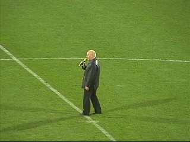
Jack Vinders zingt You'll never walk alone als
eerbetoon aan onze verleden week overleden
voorzitter Theo Pickée.
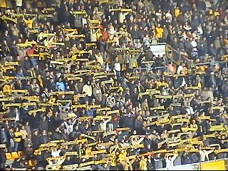
De sjalen worden massaal hooggehouden.
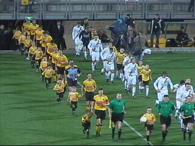
Vervolgens betreden de spelers het veld. De
gebruikelijke strijdliederen en het aftellen wordt
uit piëteit achterwege gelaten.
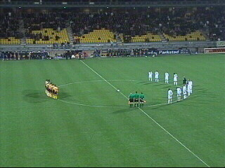
Spelers en arbitrage stellen zich op voor een
minuut stilte.
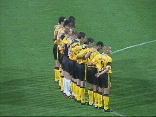
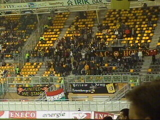
Op vrijdag spelen is niet ideaal. Er kwamen nog
maar 300 supporters mee uit Breda tegen 600
verleden seizoen.
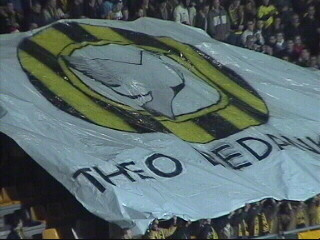
Na afloop van de minuut stilte zeilt dit doek over
de west-tribune.
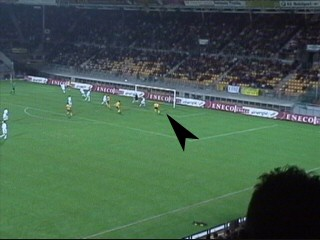
Roda komt vroeg op voorsprong door een kopbal
van Cristiano: 1-0, (7').
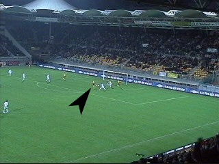
Van Zwam keert een schot van Vicelich maar de
teruggesprongen bal wordt door Cristiano in het
doel geschoten: 2-0, (19').
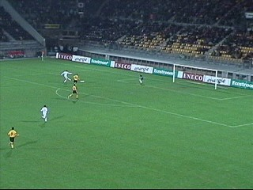
Na de 2-0 gaat Roda het initiatief steeds meer
aan NAC laten dat nog twee uitstekende kansen
krijgt in de eerste helft. Na de rust gaat Roda nog
suffer spelen en wat iedereen aan ziet komen
gebeurt in de 57e min. Elmander scoort 1-2.
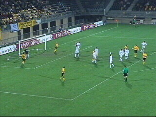
Een overduidelijke buitenspelgoal van Roda dat
via Cristiano 10 min. voor tijd een uitstekende
kans kreeg op de beslissende treffer. Helaas
miste de Braziliaan.
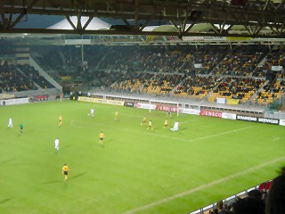
In de laatste minuut van de wedstrijd gaat Vos
erg gemakkelijk naar de grond. Arbiter Sterk
geeft een penalty.
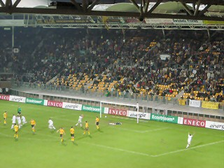
Engelaar verzilvert het presentje 2-2 (92').

Ondanks deze afknapper nog een redelijke sfeer
in het supportershome zoals hier bij de "Fotsers".
Rechts Mark Vergoossen van "Dogman", het
brein achter de rond februari/maart verschijnende
Roda-song.
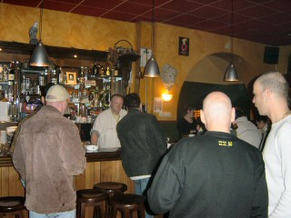
Afzakkertje met de Schaesberg-posse in een
café waarvan ik de naam vergeten ben.